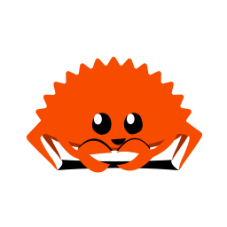
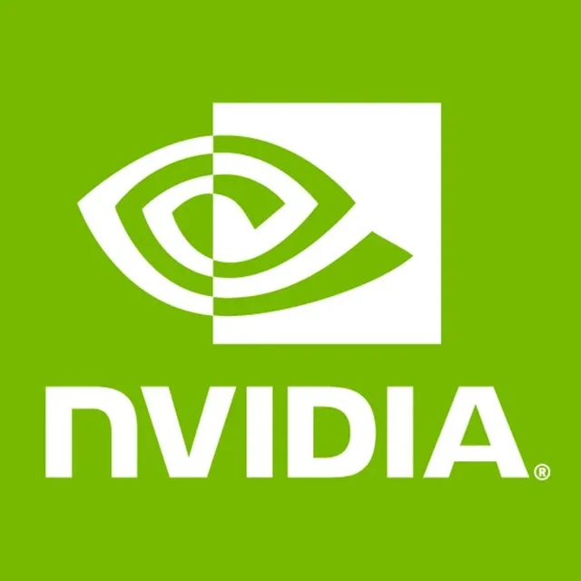

Technical Skills
Languages

Rust
 Python
Python
Perl
Tools & Frameworks

CUDA
Education
- Bachelor of Applied Science in Computer Engineering (3.7/4 CGPA)
- Relevant Courses: Computer Systems Programming, Parallel Programming, Distributed Systems, Data Structures and Algorithm, Operating System, Computer Architecture, Computer Networks
Work Experience
Design and Verification Engineer |
 AMD May 2020 ~ May 2021
AMD May 2020 ~ May 2021
- Built testbench components in C++ and System Verilog (UVM) for the Navi31 GPU cache, improving the functional verification coverage of the L1 cache by 15%
- Debugged RTL code by investigating the simulation waveform, consistently recognized for analytic skills
- Developed Perl and Bash scripts to automate regression results reporting; the implementation led to a 50% increase in workflow efficiency
Compiler Research Assistant |
 University of Toronto, Prof. Mark Jeffrey May 2022 ~ Sep. 2022
University of Toronto, Prof. Mark Jeffrey May 2022 ~ Sep. 2022
- Upgraded the loop unrolling optimization for the compiler (T4) to LLVM12, achieving a 20% speedup on SPEC-CPU2006 benchmarks than previously reported
- Upgraded the Lexer and Parser in Clang to support custom C++ instructions, credited for the ability to understand the open-sourced codebase
- Embedded the OpenCilk/Tapir intermediate representation into LLVM IR to enable loop-invariant optimizations on parallel constructs such as fork/join
ML Research Assistant |
University of Toronto, Prof. Li Qian May 2020 ~ May 2021
- Developed a support vector machine in TensorFlow and used it to analyze quantum entanglement experiments, improving the noise tolerance of the experiment setup by 30%
- Analyzed the trade-offs of different machine learning algorithms, credited for the ability to consider the physical constraints in the lab environment
- Operated lab equipment using MATLAB to conduct photonic experiments
Publication: Machine Learning Derived Entanglement Witness L. Wu, E. Zhu, and L. Qian. OSA technical digest